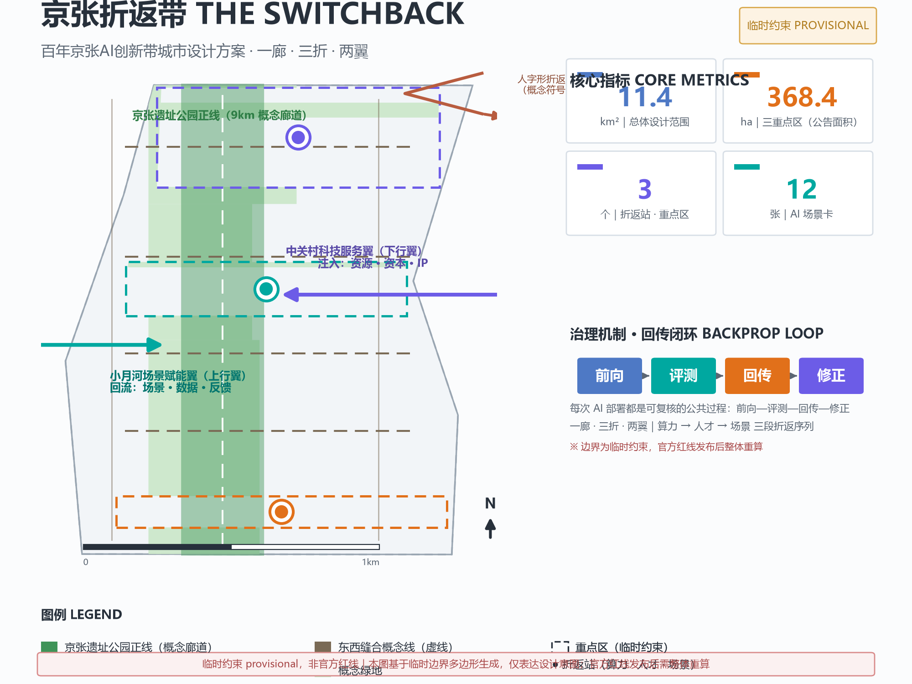
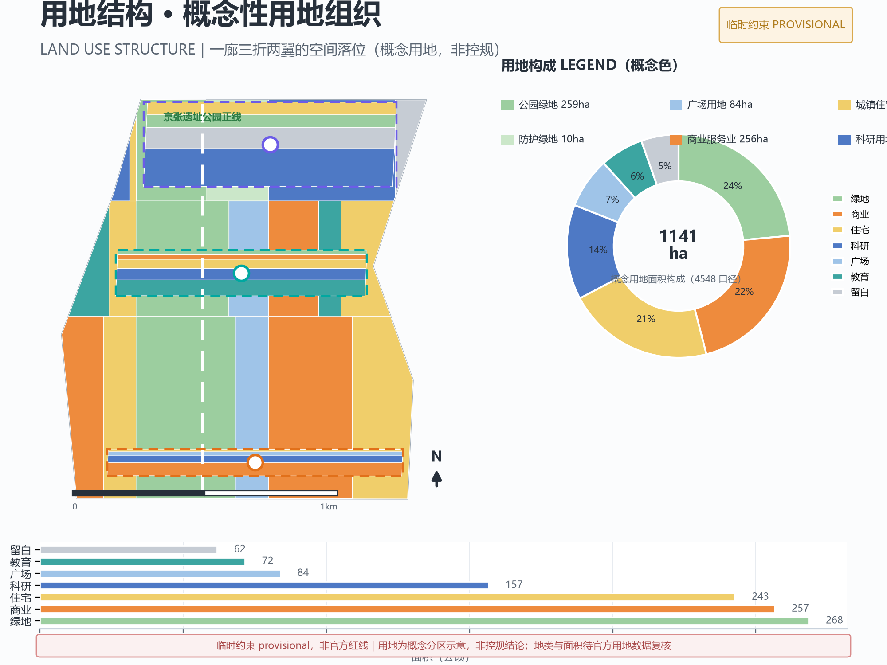
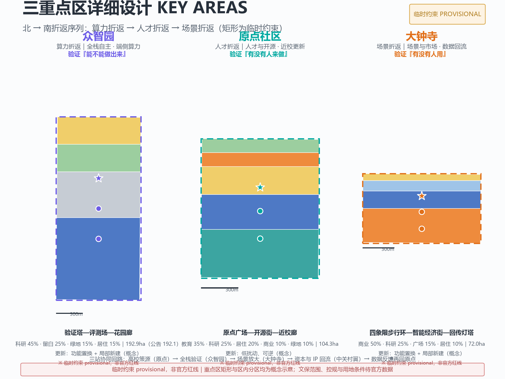
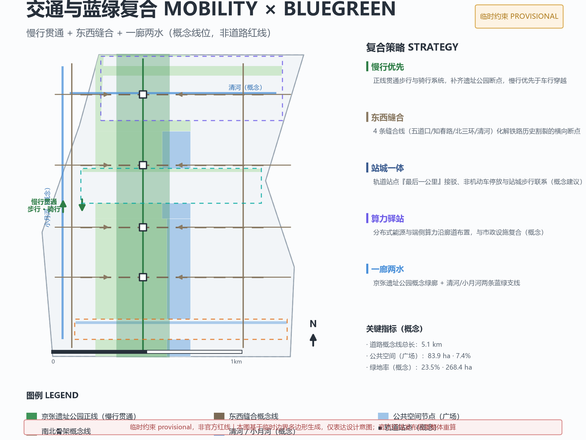
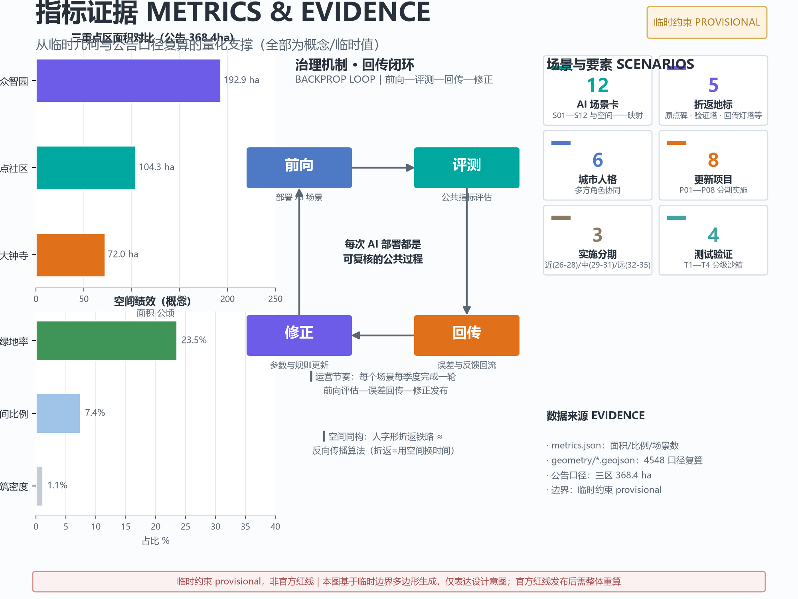

JINGZHANG SWITCHBACK: Urban Design Proposal for the Centennial Jing-Zhang AI Innovation Belt
Taking the homomorphic relationship between the Jing-Zhang Railway's switchback (herringbone) line and deep learning backpropagation as the overarching concept, this proposal organizes the 43.6 km² innovation belt into 'One Spine, Three Switchbacks, Two Wings': one heritage park main line, three switchback stations (Zhongzhiyuan · Computing-Power Switchback, AI Origin Community · Talent Switchback, Dazhongsi · Scenario Switchback), and two ascending/descending wings (Zhongguancun Technology Services Wing and Xiaoyue River Scenario Enablement Wing), turning every AI deployment into a reviewable public process of forward–evaluate–backprop–correct through the 'BACKPROP LOOP'.
JINGZHANG SWITCHBACK THE SWITCHBACK
A century of Jing-Zhang, a path of self-reliance. Facing a steep slope, do not climb it by brute force — the switchback is the first lesson the Jing-Zhang Railway teaches the AI Innovation Belt.
In 1905, facing the 33‰ steep slope at Badaling, Zhan Tianyou did not choose to brute-force a longer tunnel; instead, he used a switchback (herringbone) line to flatten the climbing gradient, letting China's first independently designed trunk railway cross over Guanggou. A century later, deep learning accomplished the same feat through backpropagation: errors are not borne head-on but propagated back to correct parameters before advancing again.
This proposal places these two "switchbacks" on the same timeline: a switchback is not a detour but a wisdom that trades space for time and collaboration for difficulty. The three "steep slopes" facing the Jing-Zhang AI Innovation Belt — the conversion gap from research to industry, the trust gap from enterprises to community, and the communication gap from Beijing to the world — can all be crossed by switching back.
1. Design Basis and Material Inventory
This proposal takes the Pre-Qualification Announcement for the International Open Call for Urban Design of the Centennial Jing-Zhang AI Innovation Belt issued by the Haidian Branch of the Beijing Municipal Commission of Planning and Natural Resources as its primary basis 来源, the agent-oriented open-source call taskbook excerpt as its participation contract 来源, and the structured materials registered in brief/site-package/ (design taskbook, permissible design space, source list, enumerations, planning constraints, and local snapshots of professional standards) as its machine-readable basis 来源. The boundaries of material use are governed by the central Source Registry; the processed task navigation is provided in the fact pack.
Provisional Boundary Disclosure (must read): As of the submission date of this draft, no officially verifiable coordinate-based polygon or planning red line has been provided through public channels; the spatial layers of this proposal are generated from the provisional constraints of brief/site-package/geometry/provisional_boundaries.geojson 来源, and both geometry/site_boundary.geojson and geometry/key_areas.geojson are annotated with official_boundary=false and geometry_role=provisional_constraint 空间数据. The provisional polygons are fitted to the four bounds described in the announcement text and the announced area; they must not be used as the official planning red line, approval basis, or precise area conclusions; the relative deviation between the announced area and the recomputed area of the provisional geometry is approximately 0.02%–0.43%, and the entire package must be recomputed once the official polygon is released 空间数据. In addition, a background cross-check against OpenStreetMap on 2026-08-08 (Issue #846) shows an approximately 412-meter-scale spatial uncertainty between the built sections of the Jing-Zhang Heritage Park measured on OSM and this provisional overall scope — a data gap on the organizing side that does not block content scoring, but means all spatial placements should be understood as "pending calibration to the official planning red line".
Following the announcement task 标准 and the agent-oriented taskbook 标准, this proposal attains the urban design depth of Regulatory Detailed Planning and the urban design depth of the Integrated Planning Implementation Plan, while complying with the principled requirements of the Measures for the Administration of Urban Design 标准 and the Measures for the Formulation and Approval of Regulatory Detailed Planning for Cities and Towns. All spatial placements, activities, investment-attraction, and policy recommendations in this proposal are conceptual recommendations, reference schemes, or material for professional teams to deepen; they do not constitute statutory planning judgments, government-approved conclusions, or implementation commitments; matters involving Floor Area Ratio, building height, road red lines, and the Demolish–Renovate–Retain strategy are all expressed as conditions pending confirmation until official regulatory-planning conditions are completed. The full source, metric, standard, and task coverage are respectively stored in sources.json, metrics.json, standard_matrix.json, design_depth_matrix.json, and compliance_matrix.json; the main text does not repeat machine indexes.

2. Three-Level Scope Working Framework
The proposal organizes its work by the three-level scope defined in the announcement, with each level answering design questions at a different scale 标准:
| Level | Official Area | Design Questions | This Proposal's Response |
|---|---|---|---|
| Coordinated Research Area | 43.6 km² | AI industry ecosystem, future urban form, coordination of the Three Zones and Two Wings | Switchback Belt overall concept, ecosystem map, naming and visual system |
| Overall Design Area | 11.4 km² | Urban renewal, regulatory-planning-depth urban design, transport, municipal works and urban character | One Spine, Three Switchbacks, Two Wings spatial structure, land-use zoning, renewal project list |
| Key-Area Detailed Design Area | 368.4 ha | Detailed design of the three key areas | District-level design of the three switchback stations |
The three levels are implemented progressively: the Coordinated Research Area answers "where to switch back" (strategic direction), the Overall Design Area answers "where to place switchback points" (spatial structure), and the Key-Area Detailed Design Area answers "how to organize inside the switchback points" (detailed design) 深度. Evidence of the areas and layers of the three levels is given in geometry/site_boundary.geojson and geometry/key_areas.geojson: the recomputed area of the provisional geometry of the Overall Design Area is approximately 11.41 km² 指标, and the three key areas total 368.4 ha across 3 KEY_AREA features 指标.
Overall Concept: One Spine, Three Switchbacks, Two Wings. The spatial skeleton proposed here is: one main line (the 9 km main corridor of the Jing-Zhang Heritage Park, carrying the Centennial Jing-Zhang cultural belt), three switchback stations (corresponding to the three key areas: Zhongzhiyuan · Computing-Power Switchback, AI Origin Community · Talent Switchback, Dazhongsi · Scenario Switchback), and two ascending/descending wings (the Zhongguancun Technology Services Wing as the "descending wing" — injecting resources, capital, and IP; the Xiaoyue River Scenario Enablement Wing as the "ascending wing" — feeding back living scenarios, public data, and user feedback). The "main line" carries the cultural spine and continuous slow traffic; the "switchback stations" undertake the validation and interchange of full-stack AI links; the "two wings" undertake the two-way flow of elements 空间数据 深度.

The three levels of work are not a set of disconnected drawings: the Coordinated Research Area determines the judgments on the industry chain and urban form, the Overall Design Area implements those judgments into land use, roads, green space, and renewal projects, and the Key-Area Detailed Design Area validates the implementability of specific plots, buildings, transport, and AI scenarios. All areas, ratios, and scales derived from provisional geometry are marked with provisional precision and must be recomputed after the official polygon is substituted 来源.
3. Coordinated Research Area: Industry and Future-City Research
3.1 Naming System and Visual Identity (agent.1)
Primary Name: JINGZHANG SWITCHBACK (abbreviated JZ-SB / THE SWITCHBACK). Naming logic: the most celebrated engineering feat of the Jing-Zhang Railway is the switchback (herringbone) line, and the most central training algorithm of deep learning is backpropagation — the two share one and the same action: switching back. The name compresses a century of engineering wisdom and AI's technological DNA into a single word that is readable, translatable, and extendable, and that conflicts with no existing city, park, or enterprise name 来源.
Naming system: each of the three positioning statements is paired with a "switchback semantics" — the Centennial Jing-Zhang cultural belt corresponds to the "main line" (the historical spine), the urban AI living experience belt to the "platform" (an experience interface everyone can board), and the AI-integration innovation belt to the "marshalling" (recombination and synergy of elements). The five functions correspond spatially to five operable units: Full-Stack Independent AI Innovation System → Zhongzhiyuan Switchback Station; world-class AI innovation ecosystem → AI Origin Community Switchback Station; AI-Enabled Scenario empowerment paradigm → Dazhongsi Switchback Station; intelligent AI-vibrant city → Xiaoyue River ascending wing; global voice in AI governance → the "Switchback Compact" governance platform (see 3.3 and Chapter 6).
Logo Direction: taking the herringbone double-track switchback as the motif — two parallel tracks run down from the left and fold back in reverse at the switchback point, which is emphasized by a dot (symbolizing "calibration"); the negative space forms the herringbone character, while also suggesting the backpropagation arrow of feedback. The visual specification suggests a three-color system: Track Gray (history and engineering), Jing-Zhang Green (heritage park and public space), and Signal Blue (AI and digital interfaces), with the switchback-line motif running through wayfinding, scenario cards, and event visuals 深度. The logo, typefaces, and graphics are original concepts of this proposal; no unauthorized material is used 来源.
3.2 Global AI Innovation Ecosystem Cases (agent.2)
The proposal extracts 6 transferable cases from global innovation ecosystems, each distilling one "switchback mechanism" — a mechanism that converts the gap in a certain link into a sustainable cycle:
1. Silicon Valley · Stanford (research → industry switchback): professor entrepreneurship, venture capital, and university patent offices form a "technology–capital" switchback loop. Transfer: organize the surroundings of Tsinghua, Beihang, BUPT, and other universities into a "campus-adjacent switchback belt", using technology-transfer institutions as the switchback points 来源. 2. Shenzhen · Nanshan (hardware → software switchback): Huaqiangbei's supply chain and Nanshan Software Park act as each other's up/downstream; rapid prototype → market feedback → redesign. Transfer: the "Full-Stack Validation Field" at Zhongzhiyuan hosts joint debugging of edge hardware and models. 3. London · King's Cross (old town → new economy switchback): railway industrial heritage renewed into a knowledge-economy quarter, where historic buildings and sci-tech offices are homomorphic. Transfer: reuse of industrial heritage along the Jing-Zhang Heritage Park, such as the "Ballast Theater" and "Platform Gallery". 4. Boston · Kendall Square (scientist → entrepreneur switchback): a "startup density" forms around MIT, with talent switching back frequently between labs and companies. Transfer: the AI Origin Community hosts "Talent Switchback Apartments" and shared experimental platforms. 5. Hangzhou · Future Sci-Tech City (platform → ecosystem switchback): large platforms open scenarios and data, while small and medium developers supply innovation in reverse. Transfer: the Xiaoyue River Scenario Enablement Wing acts as a "scenario access test section", co-operated by platform enterprises and developers. 6. Singapore · Punggol Digital District (governance → experiment switchback): the government provides a controlled experimental environment through a "regulatory sandbox", testing and adjusting as it goes. Transfer: this proposal's governance prototype of "Testing and Validation Scenarios" and the "BACKPROP LOOP" 标准.
AI Innovation Ecosystem Map: seven elements — computing power, models, data, scenarios, talent, capital, and governance — build Haidian's full-stack innovation ecosystem 来源. Spatially, the seven elements anchor respectively: computing power and models → Zhongzhiyuan; talent and data → AI Origin Community; scenarios and governance → Dazhongsi and Xiaoyue River; capital and globalization → Zhongguancun Technology Services Wing. The synergy loop of the Three Zones and Two Wings is: university seeding (AI Origin Community) → full-stack validation (Zhongzhiyuan) → scenario amplification (Dazhongsi/Xiaoyue River) → capital and IP return (Zhongguancun Wing) → data and feedback back to the origin, forming a closed loop 空间数据 深度.
3.3 Future Urban Form and Voice in AI Governance
The Coordinated Research Area also undertakes the envisioning task of "future AI urban form" 来源. This proposal makes three judgments: first, the AI city is a "rollback-able city" — every AI service should have a manual throw-back point, corresponding to a railway switch; second, the AI city is a "readable-timetable city" — the operating status of public services is publicly checkable like a train timetable; third, the AI city is a "human-review-first city" — every deployment goes through the "forward–evaluate–backprop–correct" loop (the BACKPROP LOOP), jointly reviewed by professional teams and the public, echoing the human final judgment and human-centered governance of the co-creation principles 来源. Toward global voice, the proposal recommends initiating a "Switchback Compact": an open, reproducible review protocol for AI deployment that records every switchback as public knowledge — this is a conceptual recommendation whose concrete form is left to professional teams and governance institutions to deepen.
4. Overall Design Area: Urban Renewal and Regulatory-Planning-Depth Urban Design
4.1 Spatial Structure and Renewal Framework
The Overall Design Area organizes 11.4 km² through "One Spine, Three Switchbacks, Two Wings" 标准: the main line (the conceptual corridor of the Jing-Zhang Heritage Park) runs north–south, stitching together the east and west parts of the city split by railway history; the three switchback stations are staggered along the main line, respectively hosting computing-power validation, talent incubation, and scenario consumption; the two wings extend east and west — the Zhongguancun Technology Services Wing undertakes the global allocation of elements, while the Xiaoyue River Scenario Enablement Wing undertakes scenario experimentation and public life 空间数据 空间数据.
Urban renewal follows the "low-disturbance switchback" principle: demolish nothing that need not be demolished; share whatever can be shared; and let the Demolish–Renovate–Retain strategy follow the current building baseline. Because the current building baseline, ownership, and regulatory-planning conditions are all data pending completion (see A-BUILDING-001, A-OWNERSHIP-001, and A-CONTROLS-001 in assumptions.json), this proposal does not give plot-level Demolish–Renovate–Retain conclusions, but only a tiered renewal strategy: Retain (universities and research institutes, mature residential areas, heritage protection points), Renovate (inefficient parks, aging commercial premises, idle facilities along the line), and New-build (potential land around switchback stations, land for Testing and Validation Scenarios), with specific placements to be deepened by professional teams once the official baseline is completed 来源.
4.2 Land-Use Layout (Conceptual Zoning)
geometry/land_use.geojson provides seamless conceptual zoning for the Overall Design Area, with all features annotated as conceptual recommendations rather than regulatory-planning conclusions 空间数据: the corridor belt is dominated by park green space and plazas (1401/1403) 指标; the west belt is organized in segments of "research + residential", "education + residential", and "commercial services + residential"; the east belt is organized as "research + reserved" and "commercial services + education + residential"; the three key areas are further subdivided into industry/education/commercial/green space (see Chapter 5) 深度. The zoning logic serves three judgments: near campus, rely on education (education land close to university clusters), near rail, rely on commerce (commercial-services land close to transit stations and the Third Ring Road), and near the corridor, rely on green (green space and plazas arranged continuously along the heritage park corridor).
4.3 Functional Proportions and Building Scale (Basis Pending Confirmation)
Until official regulatory-planning conditions are completed, Floor Area Ratio, building height, Building Coverage Ratio, green space ratio, and setback lines are all treated as pending confirmation 指标 来源. The proposal provides only structural functional proportion ideas (conceptual recommendations): industrial and research space approximately 30%–35% of the Overall Design Area, residential approximately 25%–30%, green and open space approximately 20%–25%, and commercial services and public services approximately 15%–20%, with the final proportions to be recomputed by professional teams based on official regulatory planning and the current baseline. No numerical conclusions are given for total building scale, per-plot intensity, or height zoning, to avoid passing off speculation as approved indicators 标准.
5. Key-Area Detailed Design (Three Switchback Stations)
From north to south, the three key areas form a complete "computing power — talent — scenario" switchback sequence: Zhongzhiyuan validates "whether it can be built" (full-stack independence), the AI Origin Community validates "whether people will do it" (talent and open source), and Dazhongsi validates "whether people will use it" (scenarios and market) 来源 空间数据.
5.1 Zhongzhiyuan AI Independent Innovation Acceleration Area (Switchback Station 1 · Computing-Power Switchback, 192.1 ha)
Positioning: the validation hub of the Full-Stack Independent AI Innovation System — a garden-type AI innovation district 标准.
Spatial structure: organized as "Validation Towers — Evaluation Field — Garden Corridor". Validation Towers (conceptual landmark): the model evaluation process is visualized as a group of street-side digital towers, where the public can see "switchback count / convergence status" in real time; Evaluation Field: centrally arranges full-stack validation scenarios (see T1 in 6.2); Garden Corridor: extends Blue-Green Space along the Qing River direction, turning the "garden-type district" into a walkable, stayable green corridor 空间数据 深度.
Building renewal: mainly "renovate + infill" — retain mature industrial parks and research facilities, renovate inefficient factories and idle buildings into testing and pilot spaces, and infill a small number of new validation facilities on potential land. Transport: strengthen external connections toward the North Fifth Ring Road and slow traffic toward the Qing River, and add internal micro-circulation and feeder connections within the park. AI scenarios: full-stack validation field, model-evaluation visualization, and energy and computing-power dispatch center. Implementation risks: full-stack validation involves data and security classification, so entry thresholds must be jointly defined by professional institutions and competent authorities; specific Demolish–Renovate–Retain decisions await completion of the current baseline 来源.
5.2 Beijing AI Origin Community (Switchback Station 2 · Talent Switchback, 104.3 ha)
Positioning: a campus-adjacent talent zone — turning "Tsinghua Park Station", the historical origin, into the "talent switchback point" of the AI era: talent shuttles frequently between campuses, laboratories, and entrepreneurial spaces 来源.
Spatial structure: organized as "Origin Plaza — Open-Source Street — Campus-adjacent Corridor". Origin Plaza (conceptual): anchored culturally on the former site of Tsinghua Park Station (the heritage-protection control scope awaits official data; this proposal only offers a conceptual indication 空间数据), organizing the "Switchback Origin Monument" (a 0 km commemoration) and an open-air launch venue; Open-Source Street: arranges open-source communities, incubators, and technology-transfer windows between universities and transit stations; Campus-adjacent Corridor: campus–park slow-traffic connections that soften the sense of walls and strengthen the "campus-adjacent" character 空间数据 深度.
Building renewal: mainly "low-disturbance renewal" — retain universities and mature residential areas, renovate inefficient street-level commercial premises and idle buildings into incubation and exhibition spaces, and strictly control new additions. Transport: Transit-Station Integration design (station feeder connections, slow-traffic priority), strengthening walking and cycling connectivity toward Wudaokou. AI scenarios: open-source night market, results launch events, Talent Switchback Apartments, and campus co-creation classrooms. Implementation risks: the campus-adjacent area has dense pedestrian flows and is sensitive in terms of heritage protection and teaching order; the proposal must hold to "low-disturbance and reversible" as the bottom line 来源.
5.3 Dazhongsi AI Industry Cluster (Switchback Station 3 · Scenario Switchback, 72.0 ha)
Positioning: the "scenario switchback station" of AI-native new business forms — switching AI back from the production end to the consumption end, forming an urban AI innovation district with world influence and urban vitality 标准.
Spatial structure: organized as "Four-Quadrant Pedestrian Loop — Intelligent Economy Street — Backprop Lighthouse". Four-Quadrant Pedestrian Loop: an accessible pedestrian loop across four blocks around Dazhongsi Station, stitching together intersections severed by arterial roads 空间数据; Intelligent Economy Street: new business forms such as intelligent terminals, content consumption, and digital-asset trading arranged along the street; Backprop Lighthouse (conceptual landmark): visualizes real feedback data from scenario operation in real time, becoming a public interface for "data backflow" 空间数据 深度.
Building renewal: mainly "functional replacement + local new-build" — retain the commercial and business base, replace inefficient business forms, and arrange a small number of experience-oriented new builds under the premise of compound use of planned green space (pending confirmation of official green space and land conditions). Transport: integrated development of Dazhongsi Station (conceptual recommendation), four-quadrant pedestrian connectivity at intersections, and priority for park-and-ride and slow traffic. AI scenarios: intelligent consumption district, Scenario A/B Test Street (T2), and digital-asset exhibition. Implementation risks: commercial renewal involves ownership and market conditions, so professional institutions must assess the feasibility of business forms and investment 来源.

6. AI Innovation Ecosystem, Personas, and AI-Enabled Scenarios
6.1 User Personas (More Than 5 Types)
1. University researchers and developers: students, faculty, and open-source contributors at Tsinghua, Beihang, BUPT, and others. Needs: low-cost experimental space, cross-university exchange, and rapid technology transfer 来源. 2. AI entrepreneurs and startup teams: teams in their 0–5 year startup period. Needs: validation environments, testing scenarios, financing matchmaking, and policy and compliance guidance. 3. Industry practitioners and big-tech engineers: employees of AI companies and platform companies. Needs: commuting efficiency, innovation interaction space, continuing education, and industry events. 4. Surrounding community residents: old Haidian residents and new young families. Needs: accessible public services, safe data boundaries, participatory public space, and tangible benefits (employment, services, environment). 5. Tourists and international visitors (AI pilgrims): developers, researchers, and the public who come drawn by reputation. Needs: experienceable AI scenarios, clear wayfinding, cultural narratives, and a commemoration system. 6. Public governance actors and professional institutions: government, planning, operation, and review teams. Needs: reviewable data, auditable decision processes, and rollback-able deployment mechanisms 深度.
6.2 AI Scenario Cards (12 Cards, Including 4 Testing and Validation Scenarios)
| ID | Scenario Card | Spatial Placement | Service Targets | Data and Privacy Boundaries | Human Review | Operating Entity (Suggested) |
|---|---|---|---|---|---|---|
| S01 | Switchback Tour: AI Cultural Guide | Entire main line | Tourists/residents | Location and preferences only, anonymized | Content review | Park operator + community |
| S02 | Ballast Theater: Outdoor Launch Venue | Heritage park node | Developers/public | Public content review | Event approval | Operation platform + professional team |
| S03 | Validation Towers: Model Evaluation Visualization | Zhongzhiyuan | Developers/public | Public indicators only | Evaluation benchmark committee | Industry alliance + third-party evaluation |
| S04 | Full-Stack Validation Field (Testing and Validation T1) | Zhongzhiyuan | Enterprises/startups | Tiered data sandbox | Security review | Competent authority + professional institution |
| S05 | Open-Source Night Market: Code and Works Bazaar | Open-Source Street, AI Origin Community | Developers/students | Open-source license management | Community self-governance | Developer community + operator |
| S06 | Talent Switchback Apartments: Short-Term Co-Creation Residences | AI Origin Community | Developers/entrepreneurs | Real-name check-in, privacy protection | Operator review | Operator + universities |
| S07 | Intelligent Consumption District: AI Retail Experience | Intelligent Economy Street, Dazhongsi | Consumers | Transaction data minimization | Consumer complaint channel | Commercial operator |
| S08 | Scenario A/B Test Street (Testing and Validation T2) | Dazhongsi | Enterprises | Desensitized experimental data | Ethics and compliance review | Commercial + academic consortium |
| S09 | Community Health Monitoring Pavilion: AI-Enabled Healthcare | Communities along the line | Residents | Medical data stays within the community | Doctor review | Medical institution + community |
| S10 | Campus Co-Creation Classroom: AI-Enabled Education | Campus-adjacent Corridor, AI Origin Community | Students/teachers | Educational data minimization | Teacher-led | Universities + education institutions |
| S11 | Public-Space Agent Pilot (Testing and Validation T3) | Xiaoyue River ascending wing | Residents | Desensitized visual data | Manual takeover button | Government + operator |
| S12 | Autonomous Shuttle Trial Section (Testing and Validation T4) | Southern section of the main line | Commuters | Trip data minimization | Safety officer on board | Transport authority + automaker |
Each scenario card clearly specifies spatial placement, service targets, operational data, privacy boundaries, Human Review, operating entity, and risks (full fields in compliance_matrix.json and the detailed scenario-card tables) 来源 深度. Four red lines: no collection of unnecessary personal privacy; all scenarios retain Human Review and one-click rollback; immature technologies must not be presented as ready for full deployment; testing scenarios must not be presented as approved operations. The four Testing and Validation Scenarios (T1–T4) all operate in a "sandbox + supervision" manner, publishing evaluation benchmarks and results to the public 标准.
6.3 Scenario–Space–Operation Mapping
Scenario cards map one-to-one onto the spatial structure: S01/S02 land on the main line; S03/S04 land on the Zhongzhiyuan Switchback Station; S05/S06/S10 land on the AI Origin Community Switchback Station; S07/S08 land on the Dazhongsi Switchback Station; S09/S11/S12 are arranged along the Xiaoyue River ascending wing and the community network 空间数据. In operation, all scenarios are incorporated into the "BACKPROP LOOP": each scenario completes one round of "forward evaluation — error backprop — corrective release" per quarter, forming a traceable operation log 深度.
7. Land Use, Building Scale, and the Demolish–Renovate–Retain Strategy
The conceptual land-use zoning is given in geometry/land_use.geojson: 26 conceptual zones seamlessly cover the Overall Design Area without gaps or overlaps 空间数据, of which park green space and plazas account for approximately 12%–15% (recomputed values in 指标 and 指标), and research, education, commercial services, residential, and reserved land are arranged according to the 4.2 logic of "near campus, rely on education; near rail, rely on commerce; near the corridor, rely on green". Building footprints are conceptual indications (18 sites) that only express the spatial distribution of "renovate + infill + limited new-build" and do not constitute a current baseline or Demolish–Renovate–Retain conclusions.
The Demolish–Renovate–Retain strategy follows a three-tier approach (conceptual recommendations; placements await the official baseline): Retain — universities and research institutes, mature residential areas, heritage protection points, and historic buildings along the line; Renovate — inefficient parks, aging commercial premises, and idle facilities, with priority given to converting them into Testing and Validation, incubation, and exhibition spaces; New-build — limited to potential land around switchback stations and land for Testing and Validation Scenarios, subject to confirmation through official planning procedures 来源. Building height, Floor Area Ratio, and Development Intensity all await confirmation of official regulatory-planning conditions (A-CONTROLS-001) 指标.
8. Transport, Rail, Municipal Works, and Public Service Facilities
Road micro-circulation (conceptual alignments): geometry/roads.geojson proposes a two-axis north–south skeleton (conceptual lines toward Xueyuan Road and Heqing Road) and four east–west stitching lines (toward Wudaokou, Zhichun Road, North Third Ring Road, and Qing River), with the stitching lines focused on resolving the lateral breaks caused by the "railway historical split" 空间数据 指标. Slow traffic: the main line runs a continuous walking and cycling system, with priority on filling the heritage park gaps (the current gap baseline awaits official data), and slow traffic takes precedence over vehicular crossings 深度. Transit-Station Integration: around stations such as Wudaokou, Zhichun Road, and Dazhongsi, "last-mile" feeder connections, non-motorized vehicle parking, and station–city pedestrian connections are organized (conceptual recommendations; alignments and red lines await official materials). New Infrastructure: distributed energy and edge computing power are arranged along the corridor as "computing power stations" (conceptual), compounded with municipal facilities; municipal pipelines, fire protection, and sponge-city conditions await official special materials (A-MUNICIPAL-001), and this proposal gives no engineering conclusions.
9. Blue-Green Space, Public Space, and Urban Character (Including AI Pilgrimage Landmarks)
9.1 Blue-Green System
Blue-Green Space is organized as "One Corridor, Two Waters": the one corridor is the conceptual green corridor of the Jing-Zhang Heritage Park (continuous park green space along the entire line 空间数据); the two waters are the two blue-green branches toward the Qing River and Xiaoyue River. The green corridor undertakes three functions — cultural display, slow-traffic connectivity, and AI scenario display — and the green space ratio target is a conceptual recommended value (approximately 15%–20%, pending confirmation by the official green-space system plan) 指标.
9.2 AI Pilgrimage Landmarks and Honor Display System (agent.4, More Than 3)
1. Switchback Origin Monument (Tsinghua Park): anchored on the former site of Tsinghua Park Station (heritage-protection scope awaits official data 空间数据), with a "0 km" monument and a century timeline recording the "three switchbacks" narrative of railway built 1909 — park built 1988 — city built 2026. 2. Herringbone Observation Deck (mid main line): an observation and launch platform themed on the switchback (herringbone) line, serving as the spatial prototype of the Logo and wayfinding system and as the main venue of S02 Ballast Theater. 3. Open-Source Contribution Honor Wall (AI Origin Community): a system for displaying open-source achievements and inscribing contributors for global developers, linked to the agent contribution honor system, with selected proposals and contributor information retained per project rules 来源. 4. Validation Towers (Zhongzhiyuan): the visualization landmark of model evaluation and full-stack validation (S03). 5. Backprop Lighthouse (Dazhongsi): the real-time visualization interface for real scenario feedback data (the public display end of S07/S08).
The honor display system has three levels: city level (landmarks), district level (node installations), and community level (everyday interfaces). All landmarks are conceptual recommendations and do not constitute approved construction items; landmark designs must pass heritage-protection, green-space, and safety reviews and must not be over-entertained 标准 深度.
9.3 Urban Character
The character keynote is "a century of engineering texture + AI digital interface": preserving the material and scale memory of railway industrial heritage (ballast, sleeper, and rail elements) while overlaying lightweight digital interfaces (information screens, floor projections, lighting), avoiding large-scale demolition and construction and stylized piling. The architectural character follows the direction of "low-rise, high-density, block-based, walkable" (conceptual recommendation), with roofs and facades encouraged to compound greenery and photovoltaics 标准.

10. Renewal Project List, Implementation Policies, and Phasing Plan (Including the Global Events System)
10.1 Renewal Project List (Conceptual Recommendations)
| ID | Project | Type | Spatial Location | Dependent Conditions | Phase |
|---|---|---|---|---|---|
| P01 | Switchback Origin Renewal (Tsinghua Park node) | Culture/Public space | AI Origin Community | Heritage-protection control scope | Near term |
| P02 | Heritage Park Gap Filling | Public space/Slow traffic | Main line | Current baseline and ownership | Near term |
| P03 | Open-Source Incubation Street Renewal | Industry/Urban renewal | AI Origin Community | Ownership and baseline | Near term |
| P04 | Full-Stack Validation Center | Industry new-build/renovation | Zhongzhiyuan | Regulatory planning and safety access | Mid term |
| P05 | Intelligent Economy Street Functional Replacement | Commercial/Urban renewal | Dazhongsi | Market and ownership | Mid term |
| P06 | Computing Power Station Network | New Infrastructure | Along the line | Municipal special studies | Mid term |
| P07 | Scenario A/B Test Street | Industry/Scenario | Dazhongsi | Ethics and compliance framework | Mid term |
| P08 | Xiaoyue River AI Living Trial Section | Public space/Scenario | Xiaoyue River Wing | Green space and water conditions | Long term |
Implementation policy recommendations (conceptual): establish a "Switchback Fund" to support public evaluation of Testing and Validation Scenarios; conduct feasibility studies on Floor Area Ratio transfer and renewal incentives for renovation-type projects; and establish a "public data sandbox" system to provide tiered data environments for T1–T4. All policies must go through statutory procedures; this proposal does not constitute policy commitments 来源. The phasing logic corresponds to geometry/phasing.geojson: near term (2026–2028) first connects the main line and the AI Origin Community, mid term (2029–2031) delivers Zhongzhiyuan and Dazhongsi, and long term (2032–2035) networks scenarios across the whole area 空间数据 深度.
10.2 Global AI Innovation Events System and Long-Term Operation (agent.6)
Annual events system (conceptual recommendations):
- Switchback Season (autumn, annual flagship event): the Global AI Innovation Belt Conference — releasing the annual evaluation benchmarks, updating the "Switchback Map", and unveiling new landmarks and honor-wall inscriptions, benchmarked against international tech festival organizing approaches.
- Backprop Day (quarterly): all scenario operators publish their "forward–evaluate–backprop–correct" logs, open to public review and proposals.
- Developer Switchback Camp (winter and summer breaks): on-site development activities jointly run by universities and open-source communities, whose outputs go directly into scenario testing.
- Origin Forum (monthly): public discussions on AI governance, ethics, and public value, consolidated into draft articles of the "Switchback Compact".
Operation mechanisms: the developer community is run on dual tracks of a professional operation team and community self-governance; Scenario Access follows a four-step process of "application — evaluation — authorization — backprop"; public experiences and landmark operation are incorporated into the daily maintenance system of parks and districts; international communication uses "switchback" as a unified motif, linking the GitHub repository, proposal showcase page, and open-source communities 来源 深度. Event, investment-attraction, funding, and policy arrangements are all conceptual recommendations or directions for deepening and are not presented as confirmed government arrangements 标准.
11. Indicator System, Area Recalculation, and Compliance Matrix
Core indicators fall into four categories: spatial (site_area_sqm, key_area_count, the areas of each key area, green_ratio, public_space_ratio, building_footprint_area_sqm, road_network_length_m, phasing_count); industry (industrial space share, scenario node count, Testing and Validation Scenario count, renewal project count — conceptual values; full basis in metrics.json); community (slow-traffic connectivity rate, public-space accessibility — pending official baseline, marked unknown); governance (BACKPROP LOOP execution rate, Human Review coverage — operational indicators to be measured after operation starts). All indicator formulas, source files, and assumptions are in metrics.json 指标 指标 指标.
Area recalculation: the provisional geometry of the Overall Design Area recomputes to 11,412,825 m² (announced approximately 11.4 km²); the three key areas recompute respectively to Zhongzhiyuan 192.9 ha, AI Origin Community 104.3 ha, and Dazhongsi 72.0 ha (announced 192.1 / 104.3 / 72.0 ha), with deviations of 0.02%–0.43% within the provisional fitting precision range 空间数据 空间数据. Compliance coverage: all tasks of announcement sections 1.3/1.4/1.5, all tasks of agent.1–agent.6, the 5 mandatory professional standards, and all design-depth items are mapped item by item in compliance_matrix.json, standard_matrix.json, and design_depth_matrix.json respectively; self-check results are in self_check.json 深度.

12. Risks, Copyright, and Compliance Notes
Materials and copyright: this proposal uses only public or Rights-Cleared Material, with the source registry in sources.json; geometry and drawings are generated based on the provisional constraints provided in the repository, and OSM background data is used within ODbL boundaries with attribution and limitation notes retained 来源. All narratives, naming, Logo direction, scenario cards, and diagrams are original concepts of this proposal; no unauthorized fonts, images, trademarks, personal portraits, or paper materials are used 来源. See report/copyright_statement.md for the detailed copyright statement.
Risks: boundary risk (the provisional polygon is not the official planning red line; the entire package is recomputed after official release); regulatory-planning risk (Floor Area Ratio, height, etc., all await official conditions); data risk (current baseline, ownership, municipal works, and heritage-protection scope await completion — see A-BOUNDARY-001 through A-SERVICE-001 in assumptions.json); implementation risk (Demolish–Renovate–Retain, engineering feasibility, and investment estimation all require deepening by professional teams); ethics risk (all AI scenarios retain Human Review and rollback). Compliance boundaries: the proposal does not disclose non-public planning materials; does not fabricate official endorsements; and does not present conceptual recommendations as government-approved conclusions or implementation commitments 标准.
References
1. Haidian Branch, Beijing Municipal Commission of Planning and Natural Resources: Pre-Qualification Announcement for the International Open Call for Urban Design of the Centennial Jing-Zhang AI Innovation Belt (2026-05-09) 来源. 2. Excerpt of the open-source call taskbook for global agents to conduct urban design of the Centennial Jing-Zhang AI Innovation Belt (user-provided rights-cleared material, 2026-05-18) 来源. 3. Beijing Municipal Science & Technology Commission and Zhongguancun Science Park Administrative Committee: public background materials on the Three Zones and Two Wings and the global AI innovation belt (2026-04-03). 4. Ministry of Housing and Urban-Rural Development: Measures for the Administration of Urban Design (2017) 标准. 5. Ministry of Housing and Urban-Rural Development: Measures for the Formulation and Approval of Regulatory Detailed Planning for Cities and Towns (2011) 标准. 6. Ministry of Natural Resources: Guidelines for the Classification of Land and Sea Use in Territorial Spatial Survey, Planning, and Use Control (Trial) (2023-11). 7. open-city-ai/haidian repository: site-package design taskbook, Source Registry, provisional boundaries, and generation basis (verification date 2026-08-10) 来源. 8. Issue #846: background cross-check record of the Jing-Zhang Heritage Park based on OpenStreetMap/Overpass (2026-08-08) 来源.